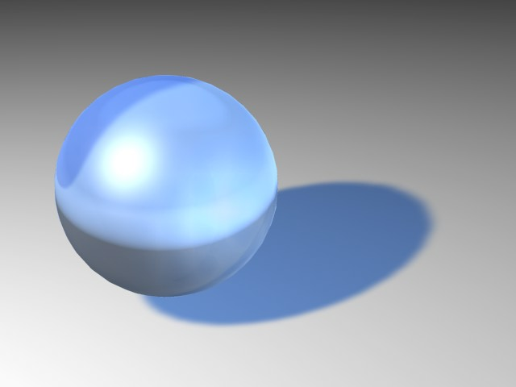
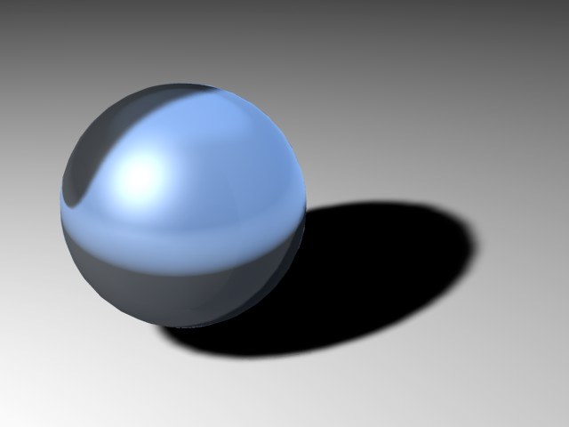
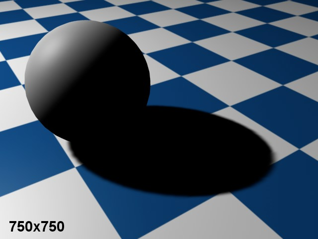

Shadow
You can combine different light source types with different shadow types. For example, an area light can cast not only area shadows, but hard shadows as well.
Use the parameters on this page to fine-tune the scene’s shadow maps.
You will now find an additional menu for defining shadow type. This menu corresponds to the menu of the same name located in the General tab, and has the same functionality.
In reality all objects — whether they are trees growing in the wild, or a vase in a room — are lit by several partial light sources. The result of this is a gradual transition of light to shadow. This soft edge, or umbra, can be simulated in Cinema 4D by using a shadow map. A shadow map is a grayscale picture of the scene as viewed from the light source. Contained in this are all the objects lit by the light source. During the render calculation the renderer will determine exactly which objects will fall into this shadow of the light source.
The major advantage of this method is the high computing speed and the soft shadow’s natural appearance.
However, the one downside to soft shadows is the memory needed. Depending on the size of the shadow map, a great deal of additional memory may be needed. So be careful in your allocation of shadow maps or you may find your scenes wasting precious memory.
Traditionally in raytracers, genuinely raytraced scenes contained hard shadows. As this technique needed to compute many more additional rays, this method increases the render time dramatically. Hard shadows, because of their abrupt, sharp appearance, are of particular interest for technical illustrations. However, in other more natural pictures they look rather unrealistic because such hard, sharp shadow borders are rarely found in real world environments.
Although Soft shadows are more natural than Hard shadows, they are still not perfectly natural. On careful examination you can see that the soft edge always has the same width. In nature this does not happen; the closer an object is to a surface on which it casts its shadows, the sharper this edge will be. Area shadows simulate this effect.
Cinema 4D calculates the shadow at the origin of the light source outwards (for all lights, whether Omni, Spot or Area). Only a hard shadow is computed at this point. The softer Area shadow is the result of a virtual Area light source that simulates the overlay of several light sources. This provides the natural scattering of light. However, as usual, this method comes with a price: it adds to the render time. Carefully assigned Area shadows, however, can produce very realistic shadows.
Adjusting this value will vary the intensity of your shadow. A value of 100% means the shadow has full intensity. With 50% your shadow will be half transparent and at 0% the shadow is invisible. Values in excess of 100% can also be entered.
Here you can change the shadow’s color. Since shadows in nature are rarely jet black, this setting is more useful than it first appears. Or you might want to set the shadow to include some of the complementary color of the subject, to emphasize the contrast between light and shade.
If shadow maps should take the transparency and alpha channels into account, enable this option.
Transparency enabled. |
Transparency disabled. |
If this option is enabled, the clipping settings on the Details tab are applied to shadow-casting as well as to illumination.
Soft Shadows
The Shadow Map settings are available only when soft shadow is selected. When using soft shadows, Cinema 4D initially sees the scene from the point of view of the light source and calculates the complete scene from this view. All objects seen in this view are interpreted as shadows for the scene. This results in Shadow Maps. Shadow Map assigns memory for each shadow map. The smaller the memory assignment, the more pixelated the shadow will appear. This can result in a shadow with a jagged, staircase-like appearance at its edges. The more memory used for the shadow map, the smoother the shadow and its edges, but the higher the memory usage.
By default, a standard size of 250x250 is used. Shadow map size can be increased substantially if needed. In order to keep your shadow sharp and smoothly defined, your shadow map will need to increase in size. If you simply need to keep your shadow edge soft, you can increase the Sample Radius. Again, this will increase render time.
Sometimes when you have a small shadow map created by a very distant light source, spherical objects may cast rectangular shadows! You can remedy this by viewing the scene through your light source. A light source, like any other scene object, can be defined as a camera view. To do this, ensure the light source is selected and from the viewport, choose Cameras / Link Active Object.
250x250 map size. |
750x750 map size. |
If the preset value of the map size does not give the desired result, adjust the Resolution X manually. In general, set Resolution X (width) to the same value as Resolution Y (height).
With a spotlight, you can provide a non-square shadow map by entering a value for Resolution Y.
Cinema 4D automatically calculates the maximum memory use for the shadow map, which is shown here. This helps you to estimate how much memory will be needed for the shadow maps.
Determines the shadow map accuracy. The higher the value, the more accurate the shadow is, at the expense of a longer render time. If you must use a small shadow map, selecting a higher value will improve the shadow quality. So you can trade off render time against memory usage.
RELEASE 18
With animated lights it can happen that a cast shadow flickers and doesn’t move correctly. This is due to the fixed resolution of the shadow maps. The resolution has to b reduced to ensure that the shadows move correctly. Of course this will result in correspondingly sharper edges as the resolution increases, which in turn has to be compensated for with a larger Sample Radius value. This will also increase render times.

The Boost Sample Radius selection menu has been added to prevent the Sample Radius value from having to be set too high. This enables a function that increases the Sample Radius and randomly disperses the samples. This replaces the stepping effect with noise, which is less noticable in animations.
In general, leave this option enabled. If you disable the option, the distance of the shadow from the object depends also on the distance of the light source from the object — called relative bias. With relative bias, the further the light source is from the object, the further the shadow will be from the object. This behavior originated in Cinema 4D R5 and is present for compatibility reasons when loading old scenes.
Occasionally, you may need to adjust the shadow’s position using the Bias value. A value of 1 m will suffice for most scenes. However, sometimes an adjustment may be necessary.
When zooming the camera on extremely small objects, the distance between object and shadow will become apparent (see Figure 1). Correct the error by lowering the value (Figure 2). You may also at times have too small a Bias value — especially with very large objects — which can result in the object casting the shadow onto itself (Figure 3). In such cases, increase the Bias value.
This setting will only be active for Distant and/or Parallel lights. This is a visible light concept known as a light cube. The light cube has its length and width dimensions set to the Parallel Width value, the depth (Z axis) of the light cube being infinite. Objects within the cube can cast shadows.
This value cannot dynamically adapt to your scene, as it is possible for other objects to jump into the shadow-casting area during an animation. Therefore, a fixed value is used, which is entered here.
This option results in a thin shadow outline instead of a full shadow.
RELEASE 18
For Omni lights, 6 shadow maps will be created internally. Visible edges can occur where individual shadow maps transition if higher Sample Radius values are used. Enabling this option will improve the quality of these transitions (but the render time will also increase).
 High Quality option disabled on left, enabled on right.
High Quality option disabled on left, enabled on right.One of the drawbacks of Omni light sources is that six shadow maps must be computed in total, which can sometimes produce small artifacts at the edges of shadows. If Shadow Cone is enabled, the shadow production is limited to a cone, thus generating a single shadow map that is free from artifacts. This also has the advantage of speeding up render times. Set the vertex angle of the shadow cone using Angle.
Enable this option to give the shadow cone a softer edge. This ensures that any object only partially in the shadow cone area casts a soft, fading shadow.
Area Shadows
Area shadows should preferably be used only when you have a little more time on your hands …
The Area shadow’s shape can be controlled very precisely since the light source used to generate the Area shadow can be defined using the settings in the Details tab.
Hence, the Area shadow can be controlled two ways:
- Area shadow shape: Details tab Area Shape, Object, Size X, Y, Z (see above)
- Area shadow quality: Shadow tab
Accuracy [0..100%]
Minimum Samples [2..10000]
Maximum Samples [2..10000]
Area Shadow Quality
The three settings Accuracy, Minimum Samples and Maximum Samples can now be used to control the quality of your Area shadow.
The basic algorithm is pretty complex so we will not discuss it here. What you should know, though: Samples are required to render Area shadows. The more samples, the more homogeneous (less grainy) the rendering will be, and the longer it will take to render. Fewer samples, on the other hand, mean shorter render times.
Of course you could render a scene with the maximum number of samples possible but this would not make any sense because parts of the scene would only require a minimum amount of samples and the scene would simply take much too long to render.
This is why Minimum Samples and Maximum Samples are available. This gives you the ability to set many or few samples, as needed (as well as an interpolation between them).
The Accuracy setting determines how (and how many) samples will be allotted in order to achieve the best result. In the most critical areas, Maximum Samples may be set to its highest value.
The Accuracy setting has the most influence in critical areas since high values lead to more samples being used. In less critical areas, the Minimum Samples value is applied.
Follow these steps to achieve the optimal settings for your scene:
- Find out where the critical areas in your scene are (grainy areas).
- Set Minimum Samples and Maximum Samples to the same value and render the scene using Render Region
- Raise the Minimum Samples and Maximum Samples equally until you achieve a good result.
- Lower Minimum Samples to 25% of the Maximum Samples value and set Accuracy to 50%.
- Finally, raise the Accuracy setting until you have a result you are happy with.
Also, make a note of these rules of thumb:
- Quality can be improved the most by raising the Maximum Samples and Accuracy values, whereas 100% Accuracy will not do you much good in combination with a very low Maximum Samples value.
- No matter which of the three settings you raise, render time will increase accordingly.
- If Minimum Samples=Maximum Samples, Accuracy will have no affect.
Examples:
In the previous image, Accuracy has been set to 100% in the top half. As you can see, the quality is still not good (very grainy). Maximum Samples is set too low. Much better results can be achieved by raising the Maximum Samples value and lowering Accuracy.
In the image below you can see variations of the two most important settings, Accuracy and Maximum Samples, including approximate render times. Use these render times as points of reference only. Depending on the lighting effect(s) you use, the result can differ. The reference below is good for assessing render times when the Maximum Samples value is doubled, for example.
Limitations
Area shadows don’t work with PyroCluster clouds; these are rendered with hard shadows.